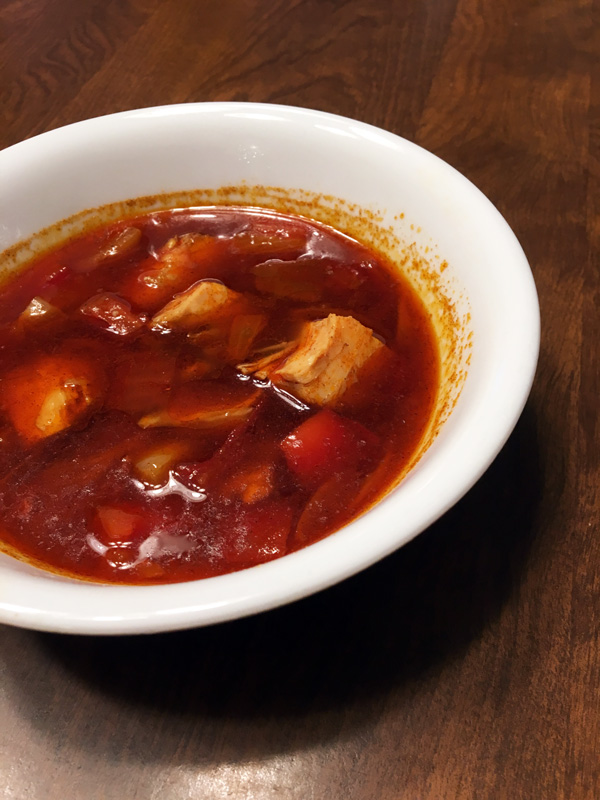

The Vision's Paprikash

Description
The Vision has little cooking experience, but nevertheless attempts to make this dish for Wanda Maximoff (the Scarlet Witch) to lift her spirits.
Wanda notes in the film that "this is not paprika". I'm guessing the Vision accidentally used cayenne or chili powder instead of pure, sweet paprika.
Ingredients
- 2 plum tomatoes
- 1 Italian frying pepper
- 1 yellow onion
- 1/4 cup canola oil
- 1 3-4lb. chicken
- salt
- pepper
- 3 tbsp Hungarian sweep paprika (+extra)
- 2 cups chicken stock
- 1/2 cup sour cream
Directions
- Wash, then remove the stems and cores from the tomatoes and pepper. Seed tomatoes and pepper, and cut into 1-inch pieces. Mince onion.
- Warm oil in a large, deep pot over medium-high heat. (Using a large pot and stirring with a ladle or long wooden spoon will keep oil from splashing on you. It will also let you cook the chicken all at once, rather than in batches.)
- Add chicken to pot, seasoning as desired with salt and pepper.
- Cook chicken until browned (about 8-10 minutes), using a long wooden spoon to stir. Transfer chicken to plate, and set aside.
- Cook onion in pan and stir occasionally until soft (about 8 minutes).
- Add paprika and stir (about 2 minutes). (Optional: use cayenne or chili powder instead of paprika. Then get confused about what garnish means, and add another pinch of the spice.)
- Return chicken and its juices to the pan. Add stock, tomatoes, and pepper.
- Bring to a boil, then reduce heat to medium low and simmer until chicken is cooked (about 30 minutes).
- Ladle soup into bowls. Top with sour cream and another pinch of paprika.
- Serve with rice, egg noodles, or dumplings.